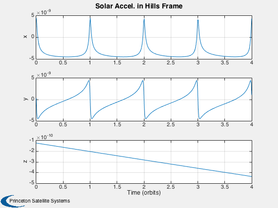
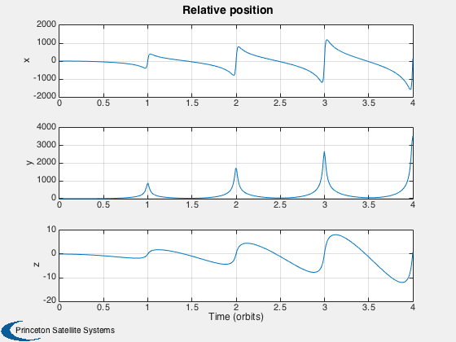

Simulate relative motion in a HEO orbit with solar pressure disturbance
Since version 7. ------------------------------------------------------------------------- See also Constant, Date2JD, DiscreteGVE, FFEccDeltaElem2Hills, Hills2Frenet, OrbRate, M2NuAbs, Period, SunV1 -------------------------------------------------------------------------
Contents
- Initialize simulation parameters:
- SOLAR PRESSURE at 1 AU
- orbital parameters
- time
- compute direction of sun in ECI coordinates
- compute accelaration due to solar pressure
- Rotate to radial/along-track/cross-track (Hills) frame
- simulate the dynamics in the relative frame
- compute the Hills frame position and velocity
- compute the Frenet frame position and velocity
- store results
%-------------------------------------------------------------------------- % Copyright (c) 2005,2012 Princeton Satellite Systems, Inc. % All rights reserved. %--------------------------------------------------------------------------
Initialize simulation parameters:
jD0 = Date2JD; nOrbits = 4; mass = 1; area = 1; dEl0 = zeros(1,6); % a i W w e M el0 = [83500, pi/4, 0, 0, 0.8, 0]; disp('SETTING UP the simulation.')
SETTING UP the simulation.
SOLAR PRESSURE at 1 AU
Note: this is equivalent to solar flux / speed of light, or 1.367 / (3e8)
solarPressure = Constant('solar pressure mks')*1e-3; % kN/m^2
orbital parameters
a = el0(1); n = OrbRate(a); T = Period(a); e = el0(5);
time
nSPO = 100; % number of samples per orbit t = linspace(0,nOrbits*T,round(nSPO*nOrbits)); % time vector in seconds jD = jD0 + t/86400; % time vector in Julian Dates
compute direction of sun in ECI coordinates
[r,v] = RVOrbGen(el0,t); unitSun = SunV1( jD, r );
compute accelaration due to solar pressure
disp('COMPUTING acceleration due to solar pressure.') accSP = solarPressure*area/mass*unitSun; % km/s/s
COMPUTING acceleration due to solar pressure.
Rotate to radial/along-track/cross-track (Hills) frame
accSPHills = zeros(size(accSP)); for i=1:length(t) m = GetHillsMats(r(:,i),v(:,i)); accSPHills(:,i) = m*accSP(:,i); end
simulate the dynamics in the relative frame
disp('RUNNING SIMULATION in relative frame using Gauss Variational Equations...')
[dEl,M] = DiscreteGVE( el0, dEl0, accSPHills(:,1:end-1), t );
RUNNING SIMULATION in relative frame using Gauss Variational Equations...
compute the Hills frame position and velocity
disp('COMPUTING the Hills frame state from the orbital element differencs.') xH = zeros(size(dEl))'; for i=1:size(xH,2) xH(:,i) = FFEccDeltaElem2Hills( [el0(1:5),M(i)], dEl(i,:), 2 ); end
COMPUTING the Hills frame state from the orbital element differencs.
compute the Frenet frame position and velocity
disp('COMPUTING the Frenet frame state from the Hills frame state.')
nu = M2NuAbs( e, M );
xF = Hills2Frenet( xH, e, nu, n );
COMPUTING the Frenet frame state from the Hills frame state.
store results
d.el0 = el0; d.dEl0 = dEl0; d.t = t; d.jD = jD; d.unitSun = unitSun; d.accSP = accSP; d.accSPHills = accSPHills; d.dEl = dEl; d.xH = xH; d.xF = xF; d.meanAnom = M; d.trueAnom = M; Plot2D(d.t/T,d.accSPHills,'Time (orbits)',{'x','y','z'},'Solar Accel. in Hills Frame') Plot2D(d.t/T,d.xH(1:3,:),'Time (orbits)',{'x','y','z'},'Relative position') %-------------------------------------- % PSS internal file version information %-------------------------------------- 